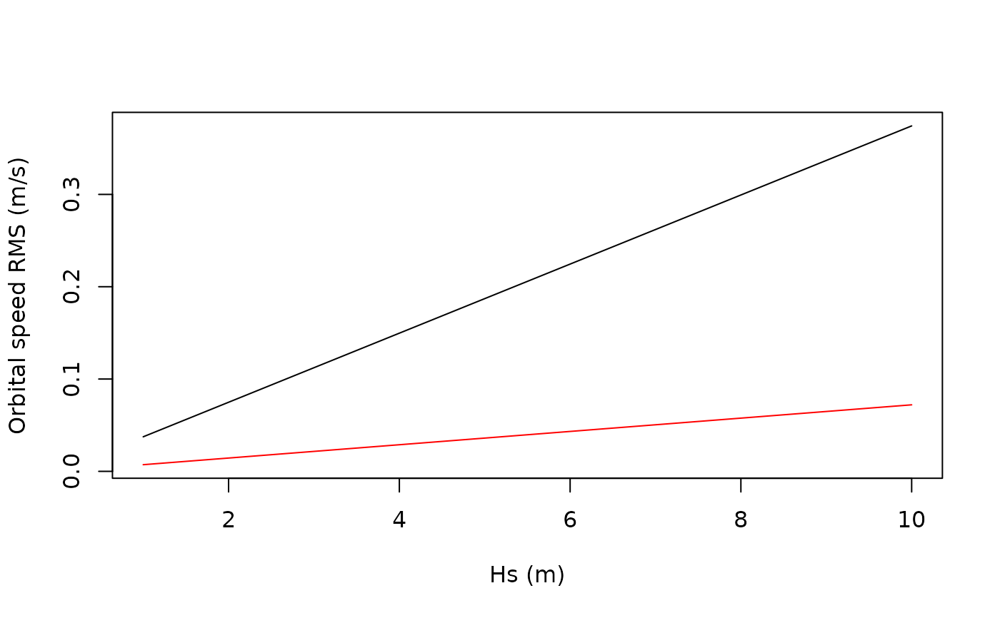

Compute the orbital speed at a given depth from the wave elevation 1D spectra
Source:R/orbital_speed.R
compute_orbital_speeds.RdCompute the orbital speed at a given depth from the wave elevation 1D spectra
Arguments
- spec
1D spectral data: TxM matrix
- freq
the M frequencies
- z
distance above the floor at which we want the orbital speed (single numeric)
- depth
depth time series (vector length T. Recycled if a single value is given)
- output_speeds
TRUE if the spectral speed are needed. Otherwise, returns the RMS (default)
Value
depending on spec, a list with the spectral velocities for each component (if output_speeds==FALSE) or a data.frame with a time series of horizontal and vertical components of (spectral) orbital speed.
Examples
# Compute orbital speed for varying Hs
S <- t(sapply(1:10, function(h) {
jonswap(h)$spec
}))
orb_speeds <- compute_orbital_speeds(S, rscd_freq, depth = 100, z = 10)
plot(1:10, orb_speeds[, 1],
type = "l",
ylim = range(orb_speeds),
xlab = "Hs (m)",
ylab = "Orbital speed RMS (m/s)"
)
lines(1:10, orb_speeds[, 2], type = "l", col = "red")
